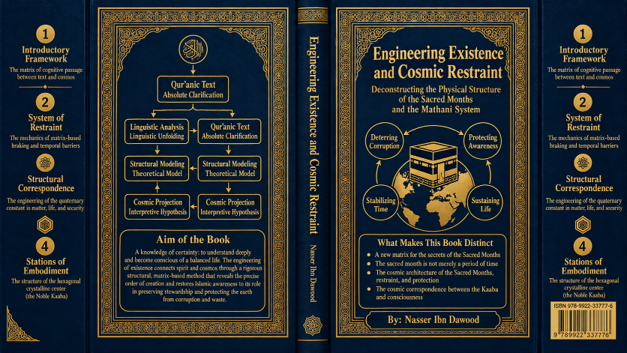

Nasser Ibn Dawood

Text extracted from the author-supplied Word edition; consult the original source.
Preparing the reader…
ENGINEERING EXISTENCE
AND COSMIC RESTRAINT
Deconstructing the Physical Architecture of the Sacred Months
and the Mathani System
A Condensed Conceptual English Adaptation
NASSER IBN DAWOOD
Revised English conceptual edition • 2026
I. The Global Knowledge Manifesto
Knowledge is a universal right. The author firmly believes that wisdom should not be locked behind paywalls or language barriers.
Global Access Policy: All books in this library are available for free in multiple digital formats (PDF, HTML, DOCX, TXT).
The Digital Library: As of early 2026, the collection hosts 68 volumes (34 in Arabic and 34 in English), fully optimized for AI-assisted research and digital archiving.
Official Platforms: Main Website: nasserhabitat.github.io/nasser-books/
GitHub: nasserhabitat/nasser-books
II. Translator’s Note: The Bridge of Meaning
This English edition is a condensed conceptual adaptation. It is not a word-for-word translation, but rather an “extraction of essence.” It presents the core philosophical framework in accessible English, omitting the exhaustive linguistic debates and classical references found in the original Arabic text.
For the academic researcher: The original Arabic version remains the primary source for comprehensive linguistic analysis, detailed exegesis (Tafsir), and the complete bibliography.
Editorial principle of this adaptation: strong claims are reported according to their methodological status in the Arabic book. Qur’anic statements, linguistic readings, structural models, numerical observations, and physical analogies are therefore not presented as if they belonged to the same level of certainty.
Contents
Orientation — What This Book Is Trying to Do
1. The Methodological Gate: Text, Reading, Model, Analogy
2. From Unity to Pairing: Ahad, Wahid, and the Mathani Principle
3. Number as Structural Language: Three, Four, Seven, and Twelve
4. The Sacred Months: From Calendar Detail to Architecture of Restraint
5. Time, Nasi’, and the Discipline of Calendar
6. The Number 19: A Digital Heuristic and Its Limits
7. The Kaaba, Pilgrimage, Center, and Security
8. Ecology, Civilization, and the Ethics of Restraint
9. The Integrated Model: Revelation, Cosmos, and Human Responsibility
Conclusion — Science as a Sanctuary of Prostration
Key Terms for the Foreign Reader
Orientation — What This Book Is Trying to Do
“Have they not looked at the sky above them—how We built it and adorned it, and it has no rifts?” — Qur’an 50:6, working translation
This book begins from a dissatisfaction with two opposite habits of reading. The first isolates revelation from the structure of the world, treating religion as a set of rituals, inherited statements, or moral exhortations detached from matter, time, nature, and human organization. The second habit moves too quickly in the opposite direction: it converts every Qur’anic expression into a scientific equation and every numerical pattern into a physical law. The present work attempts to build a third path between these extremes.
Its central question is not simply, “What are the sacred months?” It asks a more structural question: what kind of order is produced when the Qur’an joins time, prohibition, pilgrimage, security, number, and cosmic creation in one semantic field? The Arabic book explores this question through what the author calls Fiqh al-Lisan al-Qur’ani—“fiqh of the Qur’anic tongue”—a method that treats Qur’anic vocabulary as a relational system rather than as a collection of isolated dictionary entries.
The sacred months are therefore used as a case study in a larger intellectual project. Their traditional legal meaning is not denied; rather, the book asks whether the Qur’anic architecture allows the reader to see them as part of a wider logic of restraint, periodic protection, recalibration, and balance. The language of physics—barriers, fields, symmetry, calibration, matrices, orbit, energy, and structural stability—is frequently used as an analogical language for this purpose. In the author’s own methodological framing, this language is primarily descriptive and model-building; it is not automatically experimental physics.
The book also connects the sacred months to a network of other motifs: the difference between al-Ahad and al-Wahid, the principle of pairing (Mathani), the numerical structures of four, seven, twelve, and nineteen, the Qur’anic rejection of nasi’ (calendar manipulation or postponement), the Kaaba as a center of return and security, the state of ihram, restrictions on hunting, environmental protection, and the moral discipline required for human stewardship of the earth.
For a reader outside the Islamic tradition, the most useful way to approach this work is as a research proposal in Qur’anic structural reading. Some claims are linguistic, some theological, some numerical, some symbolic, and some are analogies with modern science. The book’s value does not depend on treating all of them as equally established. Its stated discipline is precisely to separate these levels and invite criticism, testing, and revision.
1. The Methodological Gate: Text, Reading, Model, Analogy
“Do not pursue that of which you have no knowledge.” — Qur’an 17:36, working translation
Before presenting its cosmological models, the book erects an epistemic gate. Its purpose is to prevent a poetic analogy from being mistaken for a scientific demonstration. Four distinct levels are used throughout the study.